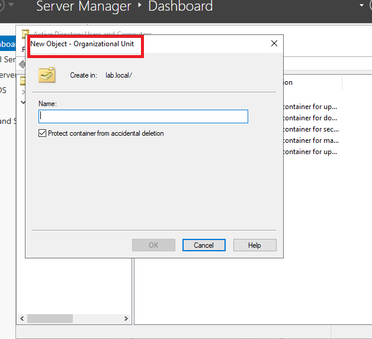
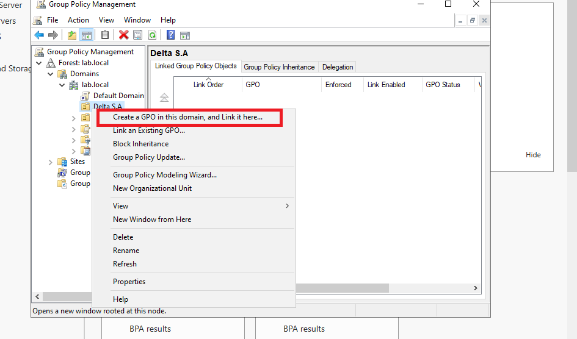
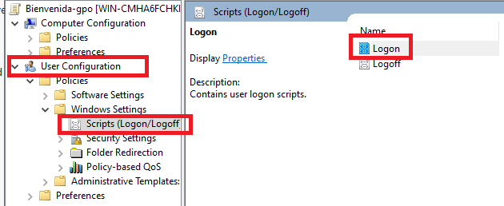
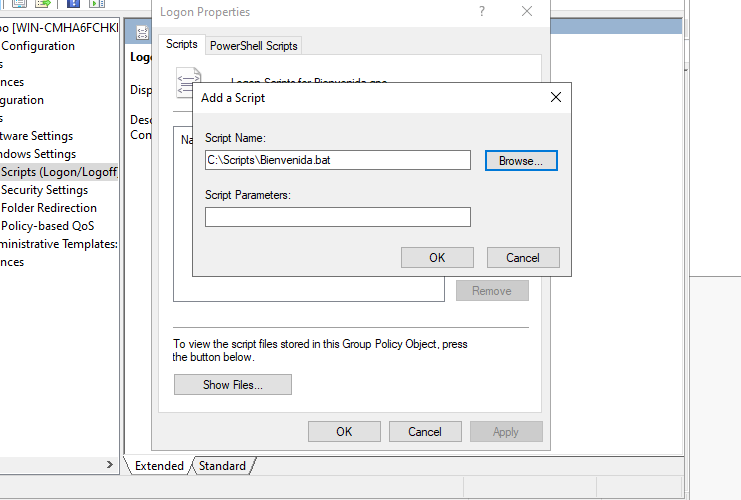

Crear OU y GPO con Script de Bienvenida en AD üñ•Ô∏èüîê
En este artículo, te guiaré paso a paso para crear una Unidad Organizativa (OU) en Active Directory (AD), aplicar una Política de Grupo (GPO) a un grupo de usuarios y configurar un script que se ejecute al iniciar sesión para mostrar un mensaje de bienvenida. Este tutorial es ideal para aquellos que ya tienen un dominio configurado y desean profundizar en la administración de AD.
¿Qué es una Unidad Organizativa (OU) y una Política de Grupo (GPO)?
Unidad Organizativa (OU)
Una Unidad Organizativa (OU) es un contenedor dentro de un dominio de Active Directory que se utiliza para organizar objetos como usuarios, equipos y grupos. Las OU permiten aplicar políticas de grupo de manera granular y facilitan la administración de recursos en una red.
Política de Grupo (GPO)
Una Política de Grupo (GPO) es un conjunto de configuraciones que se aplican a usuarios y equipos dentro de un dominio o una OU. Las GPOs permiten automatizar tareas como la configuración de seguridad, la instalación de software y la ejecución de scripts.
Creación de una Unidad Organizativa (OU) en Active Directory
Paso 1: Abrir Usuarios y Equipos de Active Directory
- Inicia sesión en tu servidor de Active Directory con una cuenta de administrador.
- Abre Usuarios y Equipos de Active Directory desde el menú Inicio o desde el Administrador del Servidor.
Paso 2: Crear una Nueva OU
- En la consola de Usuarios y Equipos de Active Directory, navega hasta el dominio en el que deseas crear la OU.
- Clic derecho sobre el dominio y selecciona Nuevo > Unidad Organizativa. 
- Asigna un nombre a la OU (por ejemplo,
Delta S.A) y clic en Aceptar.
Creación de un Grupo de Usuarios y Asignación a la OU
Paso 1: Crear un Grupo de Usuarios
- Dentro de la OU recién creada (
Delta S.A), clic derecho y selecciona Nuevo > Grupo. - Asigna un nombre al grupo (por ejemplo,
Ventas) y selecciona el tipo de grupo Seguridad. - Clic en Aceptar para crear el grupo.

Diferencia entre distribucion y seguridad
Los grupos de seguridad en Active Directory se usan para administrar permisos y derechos de acceso a recursos, como carpetas compartidas e impresoras. En cambio, los grupos de distribución solo sirven para enviar correos electrónicos a múltiples usuarios y no pueden asignar permisos.
Paso 2: Agregar Usuarios al Grupo
- Clic derecho sobre el grupo
Ventasy selecciona Propiedades. - Anda a la pestaña Miembros y clic en Agregar.
- Busca y selecciona los usuarios que deseas agregar al grupo, luego haz clic en Aceptar.

Creación y Aplicación de una Política de Grupo (GPO) con un Script de Bienvenida
Paso 1: Crear un Script de Bienvenida
- Abri el Bloc de notas o cualquier editor de texto.
-
Escribe el siguiente código para mostrar un mensaje de bienvenida:
@echo off REM Script batch para dar la bienvenida a los usuarios al iniciar sesión en el dominio set titulo=¡Bienvenido a Active Directory! set mensaje=Hola %USERNAME%, nos alegra verte en el dominio. set dominio=%USERDOMAIN% title %titulo% color 0A cls echo ================================================== echo BIENVENIDO A %dominio% echo ================================================== echo. echo Hola %USERNAME% echo Esperamos que tengas un gran día en el dominio %dominio%. echo. echo ================================================== echo. echo Presiona cualquier tecla para continuar... pause >nul
Explicación del script
@echo off: Desactiva la visualización de los comandos mientras se ejecuta el scriptREM: Permite agregar comentarios en el script que no se ejecutaránset: Crea variables con valores que pueden ser utilizados en el scripttitle: Cambia el título de la ventana de la consolacolor: Modifica los colores de la consola. El primer dígito (0) es el color de fondo y el segundo (A) el color del textocls: Limpia la pantalla de la consolaecho: Muestra texto en la pantalla-
pause >nul: Pausa la ejecución del script hasta que se presione una tecla. El >nul evita que se muestre el mensaje "Presione una tecla para continuar..." -
Guarda el archivo con la extensión
.bat(por ejemplo,bienvenida.bat) en una ubicación accesible, comoC:\Scripts\.
Paso 2: Crear una Nueva GPO
- Abre Administración de directivas de grupo desde el menú Inicio o desde el Administrador del Servidor.
- Navega hasta el dominio o la OU donde deseas aplicar la GPO.
- Haz clic derecho sobre la OU
Delta S.Ay selecciona Crear un GPO en este dominio y vincularlo aquí. - Asigna un nombre a la GPO (por ejemplo,
GPO-Bienvenida) y haz clic en Aceptar. 
Paso 3: Configurar la GPO para Ejecutar el Script de Bienvenida
- Clic derecho sobre la GPO
GPO-Bienveniday selecciona Editar. - En la consola de Editor de administración de directivas de grupo, navega hasta Configuración de usuario > Directivas > Configuración de Windows > Scripts (Inicio/cierre de sesión). 
- Haz doble clic en Iniciar sesión.
- Clic en Agregar y selecciona el archivo
bienvenida.batque creaste anteriormente. - Clic en Aceptar para guardar la configuración. 
Paso 4: Vincular la GPO al Grupo de Usuarios
- En Administración de directivas de grupo, asegúrate de que la GPO
GPO-Bienvenidaesté vinculada a la OUDelta S.A.. - Verifica que los usuarios del grupo
Ventasestén dentro de la OUDelta S.A..
Verificación del Funcionamiento del Script de Bienvenida
- Inicia sesión en una máquina unida al dominio con una cuenta de usuario que pertenezca al grupo
Ventas. - Al iniciar sesión, deberías ver un mensaje de bienvenida como el siguiente:

Preguntas Frecuentes (FAQ)
-
¿Puedo aplicar una GPO a múltiples OUs?
Sí, puedes vincular una GPO a múltiples OUs dentro del mismo dominio. -
¿Cómo puedo verificar si una GPO se está aplicando correctamente?
Puedes usar la herramienta Resultado de directivas de grupo (GPResult) en la línea de comandos para verificar la aplicación de GPOs en un equipo o usuario específico. -
¿Qué tipos de scripts puedo ejecutar con una GPO?
Puedes ejecutar scripts en VBScript, PowerShell, Batch, entre otros. Solo asegúrate de que el script sea compatible con los sistemas operativos de los clientes.